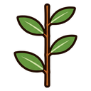
una per nodo, a zig-zagleaf_arrangement · alterne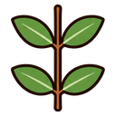
due per nodo, una di fronte all’altraleaf_arrangement · opposte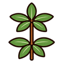
tre o più per nodo, a raggieraleaf_arrangement · verticillate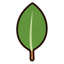
una lamina intera, anche lobataleaf_type · semplice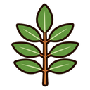
divisa in foglioline separateleaf_type · composta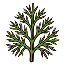
divisa in fili sottili, come capellileaf_type · molto_divisa_fine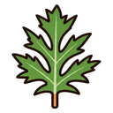
molto frastagliata, a segmenti larghi o dentati, tipo felce o prezzemololeaf_type · molto_divisa_larga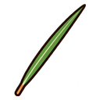
ago o squama strettaleaf_type · aghiforme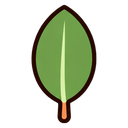
liscioleaf_margin · intero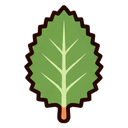
con dentini o seghettatoleaf_margin · dentato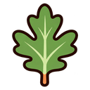
con lobi profondileaf_margin · lobato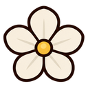
bianco o cremaflower_color · bianco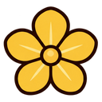
gialloflower_color · giallo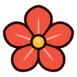
arancio o rossoflower_color · arancio_rosso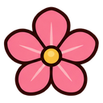
rosaflower_color · rosa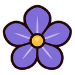
viola, lilla o azzurroflower_color · viola_blu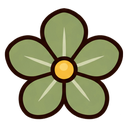
verdastro o brunastro, poco vistosoflower_color · verdastro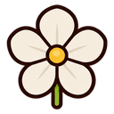
5 petali (o lobi) apertiflower_shape · cinque_petali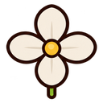
4 petali (o parti simili) a croceflower_shape · quattro_petali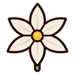
6 petali uguali, a stellaflower_shape · sei_tepali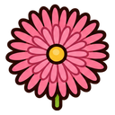
molti petali stretti a raggieraflower_shape · molti_petali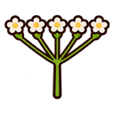
tanti fiorellini su un piano, a ombrella o corimboflower_shape · ombrella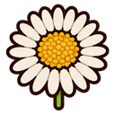
un “fiore” fatto di tanti fiorellini, tipo margheritaflower_shape · capolino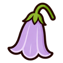
a campana, imbuto o urnaflower_shape · campanula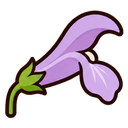
a tubo, spesso con labbraflower_shape · tubo_labbra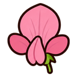
a farfalla, come il piselloflower_shape · farfalla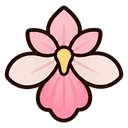
con un labbro grande in basso, tipo orchideaflower_shape · labello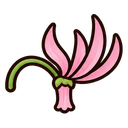
petali ripiegati all’indietroflower_shape · petali_rovesciati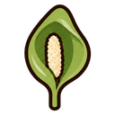
una foglia a cappuccio che avvolge una clavaflower_shape · spata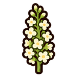
fiorellini piccoli e fitti, in spiga, grappolo o testaflower_shape · fiori_minuti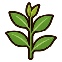
nessun fiore vistosoflower_shape · nessun_fiore_vistoso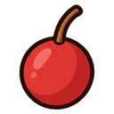
piccolo frutto carnoso, tondo (bacca o drupa)fruit_type · carnoso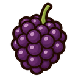
tante palline unite, come la morafruit_type · mora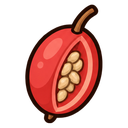
frutto carnoso con semini o peli dentro o fuori (fragola, cinorrodo)fruit_type · falso_frutto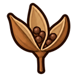
capsula secca che si aprefruit_type · capsula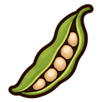
baccello allungatofruit_type · baccello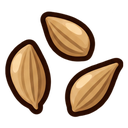
semini secchi, piccolifruit_type · secco_piccolo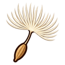
semi con piume o pennacchi (soffione)fruit_type · secco_piumoso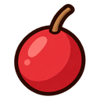
rossofruit_color · rosso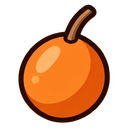
aranciofruit_color · arancio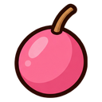
rosafruit_color · rosa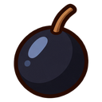
nero o blu-nerofruit_color · nero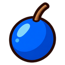
blu metallicofruit_color · blu_metallico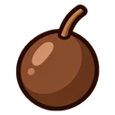
bruno, seccofruit_color · bruno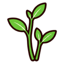
erba, fusti non legnosigrowth_form · erba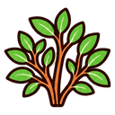
arbusto, fusti legnosigrowth_form · arbusto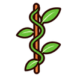
liana o rampicantegrowth_form · rampicante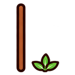
sotto i 30 cmheight_class · bassa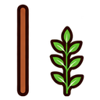
da 30 cm a 1,5 mheight_class · media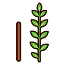
oltre 1,5 mheight_class · alta